Chlorophyll-a Processing#

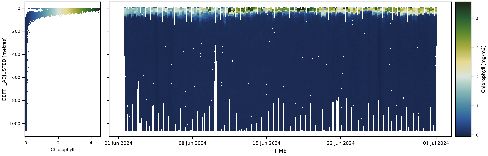
Overview#
Chlorophyll-a fluorescence measured by autonomous oceanographic platforms provides a valuable proxy for phytoplankton biomass and is one of the most widely used optical measurements in marine biogeochemistry. However, raw fluorescence observations are affected by several instrument- and environment-specific artefacts that must be addressed before they can be interpreted quantitatively. These include isolated sensor spikes, instrument dark offsets and the daytime suppression of fluorescence caused by non-photochemical quenching (NPQ).
pelagos-py implements a modular chlorophyll processing workflow that combines generic quality-control algorithms with chlorophyll-specific correction methods to produce a quality-controlled chlorophyll-a product suitable for scientific analysis. Generic processing modules, such as Range QC and Spike QC, are shared across multiple variables within pelagos-py and are documented separately. This page focuses on how those generic modules are configured for chlorophyll processing and on the chlorophyll-specific corrections that follow.
The workflow has been designed to support a wide range of autonomous observing platforms, including ocean gliders, while remaining compatible with processing approaches commonly adopted within the BGC-Argo community. Default processing parameters are therefore intended as robust starting points rather than universally applicable values and should be reviewed for individual deployments, sensor configurations and sampling strategies.
The chlorophyll processing workflow consists of six sequential stages:
Initial quality control — converts the raw fluorometer signal (
CHLA_FLUORESCENCE_RAW, counts) toCHLAusing the manufacturer calibration coefficients and applies a conservative global range test. This step identifies grossly implausible observations and generates the initial QC flags. The resultingCHLAvalues are not used numerically in subsequent correction calculations.Spike correction — applies the generic spike-separation algorithm directly to
CHLA_FLUORESCENCE_RAWto separate isolated fluorescence spikes from the underlying fluorescence baseline. The resulting baseline fluorescence signal is used for subsequent correction calculations.Deep correction — estimates the in-situ fluorometer dark offset from the despiked fluorescence baseline. The estimated dark replaces the manufacturer-supplied dark value and is used, together with the manufacturer scale factor, to generate
CHLA_ADJUSTED(mg m-3) andCHLA_FLUORESCENCE_ADJUSTED(RFU).Surface flagging — identifies near-surface observations that should be excluded from the calculation of NPQ reference quantities while remaining available for correction.
Non-photochemical quenching (NPQ) correction — applies one of several published correction methods to
CHLA_ADJUSTEDto reconstruct daytime chlorophyll fluorescence suppressed by NPQ.CHLA_FLUORESCENCE_ADJUSTEDdoes not undergo NPQ correction.Final quality control — verifies that the fully corrected
CHLA_ADJUSTEDconcentrations remain physically plausible and assigns the final quality-control flags.
Each processing stage is described in detail below, including the default pelagos-py configuration, the scientific rationale for the selected parameters and guidance on when those defaults should be modified for different deployments.

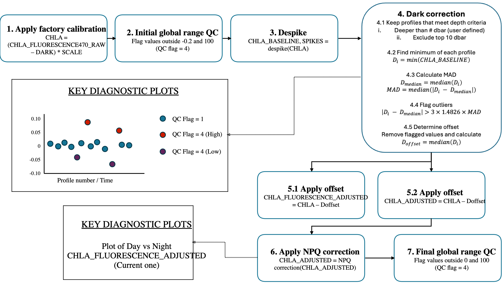
1. Initial quality control#
Prior to correction of the raw fluorescence signal, pelagos-py performs an initial global range quality-control test on the manufacturer-calibrated chlorophyll-a concentration (CHLA). The purpose of this initial test is to identify grossly implausible sensor observations and assign the corresponding quality-control flags before subsequent processing.
CHLA is calculated from the raw fluorometer signal (CHLA_FLUORESCENCE_RAW, counts) using the manufacturer-supplied dark value (DARK_CHLA, counts) and scale factor (SCALE_CHLA, mg m-3 count-1):
CHLA = (CHLA_FLUORESCENCE_RAW - DARK_CHLA) × SCALE_CHLA
The resulting CHLA values are used only for this initial quality-control test and are not used numerically in the subsequent spike, dark or NPQ correction calculations.
1.1 Global range test#
Default configuration:
variable_ranges:
CHLA:
4: [-0.2, 100, outside]
This assigns a bad quality flag (4) to chlorophyll concentrations below -0.2 mg m-3 or above 100 mg m-3. Because raw CHLA always needs correcting, a following range test (run together with Spike QC) marks every other value probably bad (3), so CHLA_QC ends as 3 or 4.
These limits are intentionally conservative and are designed to identify grossly implausible observations while retaining the full range of chlorophyll concentrations expected across oligotrophic, coastal and bloom conditions. The slightly negative lower limit allows for small differences between the manufacturer-supplied dark value and the true in-situ fluorometer dark, preventing potentially recoverable observations from being rejected before the dark correction is applied.
Observations assigned QC flag 4 remain in the dataset but are excluded from subsequent correction calculations where the configured calculation QC flags are applied.
The mathematical formulation of the Range QC algorithm is documented separately in the pelagos-py Quality Control documentation.
2. Spike correction#
Following the initial global range test, pelagos-py applies the generic Spike QC algorithm directly to the raw fluorometer signal (CHLA_FLUORESCENCE_RAW, counts). This step separates isolated fluorescence spikes from the underlying fluorescence baseline before the in-situ dark correction is estimated.
Default configuration:
variables:
CHLA_FLUORESCENCE_RAW: 2
window_size: 50
The default 50-point rolling-median window provides a balance between preserving genuine vertical fluorescence structure and identifying isolated excursions caused by bubbles, transient particles and electronic noise. A sensitivity of 2 is used to identify departures from the local fluorescence baseline according to the generic Spike QC algorithm.
The spike correction produces separate baseline and spike components. The baseline represents the despiked fluorometer signal and is retained in counts for use in the subsequent dark-correction calculation. The separated spike component is retained independently and does not contribute to estimation of the fluorometer dark value.
Observations previously assigned QC flag 4 by the initial global range test are excluded from the calculation of the fluorescence baseline where the configured calculation QC flags are applied.
The mathematical description of the Spike QC algorithm, including calculation of the rolling baseline and separation of the baseline and spike components, is documented separately in the pelagos-py Quality Control documentation. (Subject to change based upon spike test discussions.)
3. Deep correction#
The procedure follows the principles of the BGC-Argo chlorophyll fluorescence dark-correction approach (Schmechtig et al., 2026), while adapting the method for the higher sampling frequency and variable profiling depths of glider deployments.
The dark correction is performed on the despiked fluorescence baseline produced from CHLA_FLUORESCENCE_RAW in the preceding spike-correction step. The fluorescence baseline remains in counts, allowing the in-situ dark correction to be estimated and applied in the native fluorometer signal domain.
The manufacturer calibration defines a factory dark value (DARK_CHLA, counts) and scale factor (SCALE_CHLA, mg m-3 count-1), such that:
CHLA = (CHLA_FLUORESCENCE_RAW - DARK_CHLA) × SCALE_CHLA
pelagos-py uses the despiked fluorescence baseline to estimate an improved in-situ dark value. For each suitable profile, a profile-specific dark value (iDARK_CHLA, counts) is estimated from the minimum valid fluorescence baseline count below a shallow exclusion depth. Unlike the BGC-Argo implementation, which applies a running-median filter before identifying the minimum, pelagos-py does not apply additional smoothing at this stage because anomalous fluorescence spikes have already been separated from the baseline during the preceding spike correction.
An initial deployment-specific dark value (GLIDER_DARK_CHLA, counts) is then established from a defined set of suitable profiles collected early in the deployment. This value replaces the manufacturer-supplied DARK_CHLA for generation of the adjusted chlorophyll product. The manufacturer SCALE_CHLA is retained, giving:
CHLA_ADJUSTED = (CHLA_FLUORESCENCE_BASELINE - GLIDER_DARK_CHLA) × SCALE_CHLA
where CHLA_ADJUSTED has units of mg m-3.
pelagos-py also generates CHLA_FLUORESCENCE_ADJUSTED (RFU), representing the despiked fluorescence baseline after application of the in-situ dark correction. This provides a dark-corrected fluorescence variable that is retained separately from the chlorophyll concentration estimate.
Importantly, pelagos-py continues to calculate iDARK_CHLA throughout the deployment. These subsequent estimates are not used to continually update the applied dark correction. Instead, they provide a diagnostic time series for assessing the stability of the fluorescence baseline and identifying possible sensor drift or biofouling.
After the deep correction, the two adjusted variables have different roles in the subsequent processing workflow:
CHLA_ADJUSTED(mg m-3) is the best available chlorophyll-a concentration estimate and is passed to the subsequent NPQ correction.CHLA_FLUORESCENCE_ADJUSTED(RFU) represents despiked, dark-corrected fluorescence and does not undergo the subsequent NPQ correction.
Default configuration:
apply_to: CHLA_FLUORESCENCE_BASELINE
dark_value: null
depth_threshold: 950
n_profiles: 5
max_valid_value: 5
min_profile_points: 20
min_valid_points: 3
If dark_value is supplied by the user, this value is used instead of estimating GLIDER_DARK_CHLA from the deployment.
4. Surface flagging#
The CHLA Quenching step’s reference_min_depth parameter keeps CHLA_ADJUSTED observations shallower than a given depth out of the NPQ reference calculations. The default is 2 m; the configuration used for the figures in this guide uses 5 m:
- name: CHLA Quenching
parameters:
reference_min_depth: 5
This does not prevent the near-surface observations from being corrected. Instead, it excludes them from the calculation of the NPQ reference quantities, ensuring that potentially quenched surface fluorescence cannot define the reference used to reconstruct the profile. Once an appropriate reference has been established from observations deeper in the profile, the resulting correction is applied to all eligible observations, including those near the surface.
The 5 m threshold is intended to exclude the shallowest observations, where wave action, platform motion and the strongest daytime quenching are most likely to compromise the calculation of NPQ reference quantities. Users may adjust this threshold if a different near-surface exclusion depth is more appropriate for their platform or sampling strategy.
5. Non-photochemical quenching correction#
5.1 Background#
Chlorophyll fluorescence yield decreases under sufficiently high irradiance because phytoplankton dissipate a greater fraction of absorbed energy through regulated non-photochemical pathways. During daylight, the measured fluorescence can therefore decline near the surface even when chlorophyll concentration has not changed.
NPQ primarily affects the illuminated upper ocean. Its magnitude and vertical extent vary with irradiance, mixing, physiological state and community composition. pelagos-py provides several published correction approaches because no single method is optimal for every platform or combination of available variables.
The NPQ correction is applied to CHLA_ADJUSTED, the chlorophyll-a concentration derived from the despiked and dark-corrected fluorescence signal in the preceding processing steps. CHLA_FLUORESCENCE_ADJUSTED is retained as the despiked and dark-corrected fluorescence product and does not undergo NPQ correction.
All implemented methods are applied only when the profile solar elevation is positive:
At night,
Solar elevation is calculated for each profile from the median time, latitude and longitude of the observations nearest the surface.
Throughout the following descriptions, \(F\) denotes CHLA_ADJUSTED, the chlorophyll-a concentration derived from the despiked and dark-corrected fluorescence signal, and \(b_{bp}\) denotes the selected particulate backscattering variable. The term fluorescence is retained when describing the published NPQ algorithms because these methods reconstruct the fluorescence-derived chlorophyll signal suppressed by NPQ.
5.2 Available methods#
Method |
Primary reference |
Correction reference |
Required derived inputs |
|---|---|---|---|
|
Sackmann et al. (2008) |
Maximum fluorescence-to-backscatter ratio within the mixed layer |
MLD, \(b_{bp}\) |
|
Xing et al. (2012) |
Maximum fluorescence within the mixed layer |
MLD |
|
Biermann et al. (2015) |
Maximum fluorescence within the euphotic zone |
\(Z_{\mathrm{eu}}\) |
|
Hemsley et al. (2015) |
Deployment-wide nighttime fluorescence-backscatter regression |
\(Z_{\mathrm{eu}}\), \(b_{bp}\) |
|
Swart et al. (2015) |
Maximum fluorescence-to-backscatter ratio within the euphotic zone |
\(Z_{\mathrm{eu}}\), \(b_{bp}\) |
|
Thomalla et al. (2018) |
Preceding-night depth-resolved fluorescence-to-backscatter ratio |
\(b_{bp}\) |
|
Mitchell et al. (2024) extension |
Time-interpolated depth-resolved nighttime fluorescence-to-backscatter ratio |
\(b_{bp}\) |
|
Xing et al. (2018) |
Maximum fluorescence-to-backscatter ratio within the NPQ layer |
MLD, \(Z_{\mathrm{IPAR}}\), \(b_{bp}\) |
|
Terrats et al. (2020) extension |
Xing et al. (2018) shallow-mixing correction with Sackmann-style mixed-layer reconstruction |
MLD, \(Z_{\mathrm{IPAR}}\), \(b_{bp}\), and full irradiance profiles for the shallow-mixing branch |
5.2.1 Evolution of NPQ correction methods#
The NPQ correction methods implemented in pelagos-py represent a progression in complexity and in the supporting observations required to estimate the unquenched chlorophyll fluorescence signal.
The earliest methods (Xing et al., 2012; Biermann et al., 2015) reconstruct fluorescence using only the measured fluorescence-derived chlorophyll profile together with either the mixed-layer depth or the euphotic depth.
Sackmann et al. (2008) and Swart et al. (2015) introduced particulate backscattering as a conservative optical reference, assuming that the fluorescence-to-backscatter ratio remains approximately uniform within the unquenched water column.
Hemsley et al. (2015) further developed this concept by deriving a deployment-wide nighttime fluorescence-to-backscatter relationship that can be applied to daytime observations.
Thomalla et al. (2018) replaced the deployment-wide relationship with depth-resolved nighttime fluorescence-to-backscatter reference profiles constructed from consecutive nighttime observations. Mitchell et al. (2024) extends this approach by interpolating between consecutive nighttime reference profiles, allowing the reference relationship to evolve continuously through time.
Xing et al. (2018) introduced a profile-specific correction based on the estimated NPQ layer, while the Terrats et al. (2020) X18_S08 extension modifies the shallow-mixing branch of the Xing et al. (2018) algorithm by replacing the mixed-layer sigmoid correction with a Sackmann et al. (2008)-style fluorescence-to-backscatter reconstruction.
5.2.2 Common assumptions#
Several of the implemented NPQ correction methods (Sackmann et al., 2008; Swart et al., 2015; Hemsley et al., 2015; Thomalla et al., 2018; Mitchell et al., 2024; Xing et al., 2018; and Terrats et al., 2020) use particulate optical backscattering as a conservative optical reference.
These methods assume that non-photochemical quenching alters chlorophyll fluorescence yield without substantially affecting particulate backscattering. Consequently, variations in the fluorescence-to-backscatter ratio are interpreted primarily as changes in fluorescence yield rather than changes in particle concentration.
The validity of this assumption depends on the fluorescence and backscatter measurements sampling the same particle population, the backscattering measurements having been appropriately quality controlled, and the fluorescence-to-backscatter relationship remaining sufficiently stable over the depth or time interval from which the reference is derived.
5.4 Sackmann et al. (2008)#
Principle#
The fluorescence-to-backscatter ratio is assumed to be vertically uniform in the mixed layer in the absence of quenching. The largest observed ratio within the mixed layer is treated as the least-quenched reference.
Ratio profile#
Only depths within the mixed layer are searched:
The reference ratio is
Let the depth at which this maximum occurs be
Reconstruction#
From the surface to \(z_R\),
The implemented output is
Assumptions#
The unquenched fluorescence-to-backscatter ratio is approximately uniform within the mixed layer.
At least one acceptable observation within the mixed layer represents the unquenched fluorescence-to-backscatter ratio.
Figure#

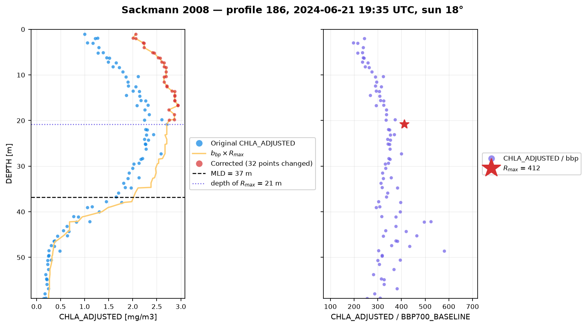
Original fluorescence-derived chlorophyll signal, backscatter-scaled reconstruction and corrected signal. The mixed-layer depth and depth of \(R_{\max}\) are shown.#
5.5 Xing et al. (2012)#
Principle#
The maximum acceptable value of CHLA_ADJUSTED observed within the mixed layer is assumed to represent the unquenched surface-layer chlorophyll signal. All shallower observations are raised to this maximum.
Reference fluorescence#
The quenching depth is the depth of that maximum:
Correction#
Assumptions#
The maximum acceptable fluorescence-derived chlorophyll signal within the mixed layer approximates the unquenched value.
The maximum acceptable value within the mixed layer is not a residual spike or other artefact.
The mixed-layer depth provides an appropriate upper bound on the quenching layer.
Figure#

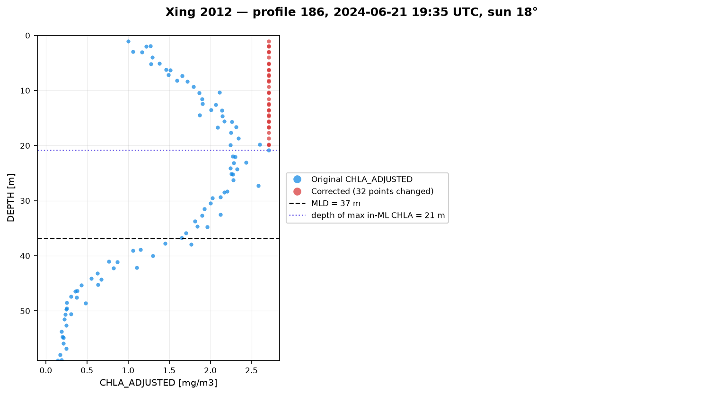
Original and corrected daytime chlorophyll profiles. Horizontal lines identify the mixed-layer depth and the depth of maximum in-mixed-layer fluorescence-derived chlorophyll.#
5.6 Biermann et al. (2015)#
Principle#
This method has the same maximum-fluorescence structure as Xing et al. (2012), but searches within the euphotic zone rather than the mixed layer.
Reference fluorescence#
with quenching depth
Correction#
Assumptions#
The maximum acceptable fluorescence-derived chlorophyll signal within the euphotic zone approximates the unquenched value.
The euphotic depth provides an appropriate upper bound on the quenching layer.
A reliable estimate of the euphotic depth is available for every daytime profile.
Figure#

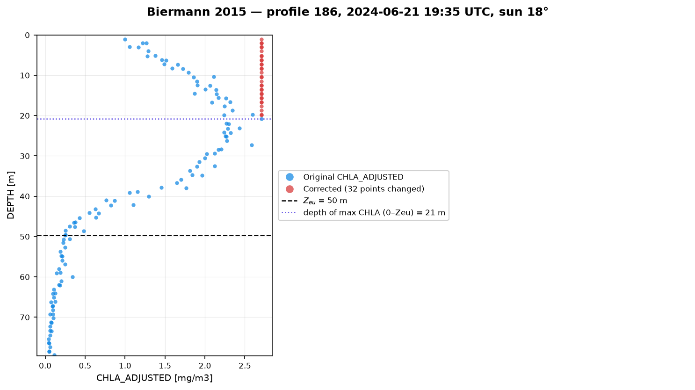
Original and corrected chlorophyll profiles with the euphotic depth and the depth of maximum fluorescence-derived chlorophyll identified.#
5.7 Hemsley et al. (2015)#
Principle#
The Hemsley et al. (2015) method assumes that a single relationship exists between fluorescence-derived chlorophyll and particulate backscattering throughout a deployment. pelagos-py first fits a deployment-wide linear regression using acceptable nighttime observations collected within the upper 60 m of the water column. The resulting regression is then evaluated for each daytime profile and used to reconstruct CHLA_ADJUSTED throughout the euphotic zone.
Nighttime regression#
The regression is fitted using acceptable nighttime observations shallower than the reference depth,
which is the default value used by the current implementation.
pelagos-py fits the linear model
where the ordinary least-squares slope is
and the intercept is
Daytime reconstruction#
Unlike the regression, which is fitted using only nighttime observations from the upper 60 m, the fitted relationship is evaluated throughout the daytime euphotic zone.
The corrected value is therefore
Below the euphotic depth, the original CHLA_ADJUSTED value is retained,
Unlike several other NPQ methods implemented in pelagos-py, the regression estimate replaces the measured daytime value throughout the corrected region. The implementation does not constrain the corrected value to remain greater than or equal to the observed daytime value.
Assumptions#
A single deployment-wide nighttime fluorescence-to-backscatter relationship is representative of the deployment.
Temporal changes in phytoplankton physiology and community composition do not substantially alter this relationship.
At least five acceptable nighttime observations shallower than 60 m are available to constrain the regression.
The nighttime backscatter observations span a sufficient range to estimate a stable regression.
A reliable estimate of the euphotic depth is available for every daytime profile.
Figures#

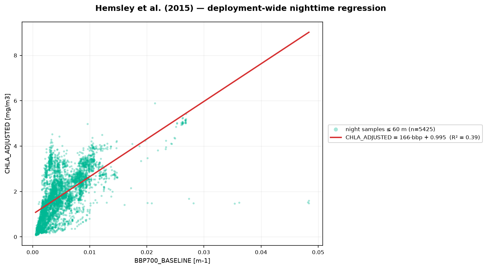
Nighttime CHLA_ADJUSTED against particulate backscattering for observations shallower than 60 m, together with the fitted deployment-wide linear regression and coefficient of determination (\(R^2\)).#

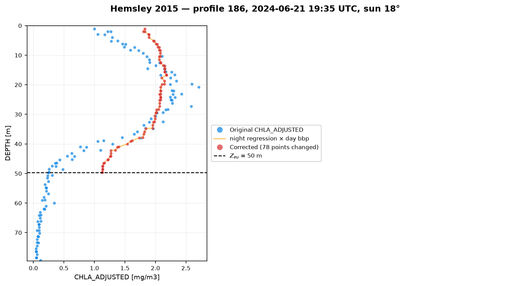
Original daytime CHLA_ADJUSTED and the chlorophyll signal reconstructed from the deployment-wide nighttime regression throughout the euphotic zone.#
5.8 Swart et al. (2015)#
Principle#
The Swart implementation uses the same maximum fluorescence-to-backscatter framework as Sackmann et al. (2008), but searches within the euphotic zone.
Ratio reference#
and
Reconstruction#
Assumptions#
The maximum fluorescence-to-backscatter ratio within the euphotic zone approximates the unquenched ratio.
The euphotic depth provides an appropriate upper bound on the quenching layer.
Figure#

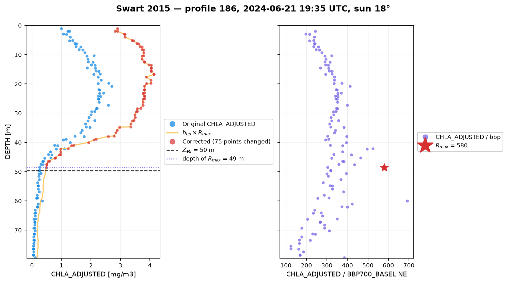
Original CHLA_ADJUSTED, \(F/b_{bp}\), and corrected chlorophyll. The euphotic depth and depth of \(R_{\max}\) are identified.#
5.9 Thomalla et al. (2018)#
Principle#
Each daytime profile is corrected using a depth-resolved fluorescence-to-backscatter ratio derived from the most recent preceding night. Unlike methods based on a single fluorescence or fluorescence-to-backscatter maximum, this approach preserves the vertical structure of the nighttime optical relationship.
For the earliest daytime profiles, where no preceding night exists, the nearest following night is used instead.
Constructing nighttime reference profiles#
Consecutive nighttime profiles are grouped into individual nights and aggregated into 1 m depth bins.
For night \(n\) and depth bin \(k\),
and the corresponding fluorescence-to-backscatter ratio is
Both \(\overline{F}_{n,k}\) and \(R_{n,k}\) are linearly interpolated from the nighttime depth bins onto the measurement depths of the daytime profile,
Night-day difference#
The nighttime and daytime profiles are compared to determine the vertical extent of NPQ:
The algorithm identifies the largest night-day difference within the upper 5 m,
with anchor value
If no valid observations are available within the upper 5 m, the maximum difference across the profile is used instead.
Candidate quenching depths#
Candidate quenching depths consist of
the five observations with the smallest absolute fluorescence difference, and
observations associated with a zero crossing of \(D(z)\).
For each candidate depth \(z_c\), the gradient from the anchor point is
The quenching depth is taken as the candidate with the largest gradient,
Reconstruction#
The nighttime fluorescence-to-backscatter ratio is applied to the daytime backscatter profile,
The correction is applied only above the estimated quenching depth and only where it increases the measured value,
Assumptions#
The preceding night’s fluorescence-to-backscatter relationship remains representative during the following day.
Consecutive nighttime profiles provide a stable nighttime reference.
The night-day fluorescence difference contains sufficient information to identify the base of the quenched layer.
Figures#

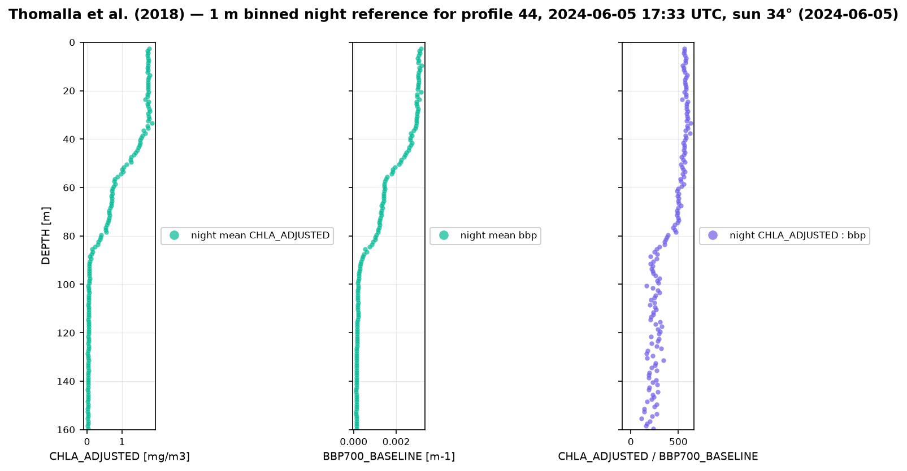
Depth-binned nighttime mean CHLA_ADJUSTED, mean backscatter and their ratio for one reference night.#

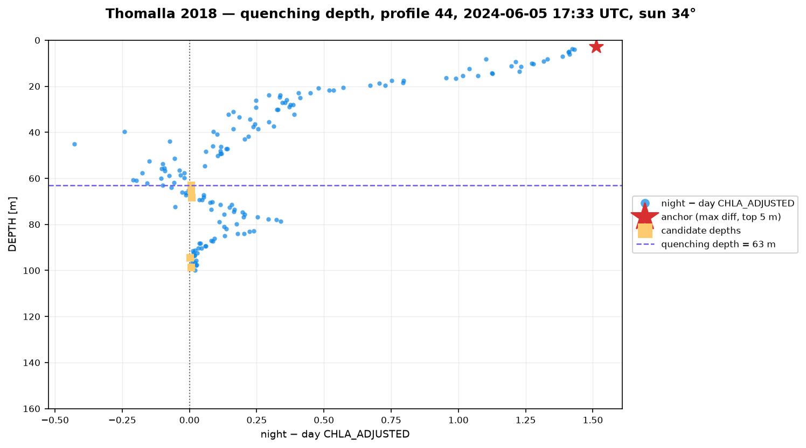
Night-minus-day chlorophyll difference, selected anchor point, candidate quenching depths and the final quenching depth.#

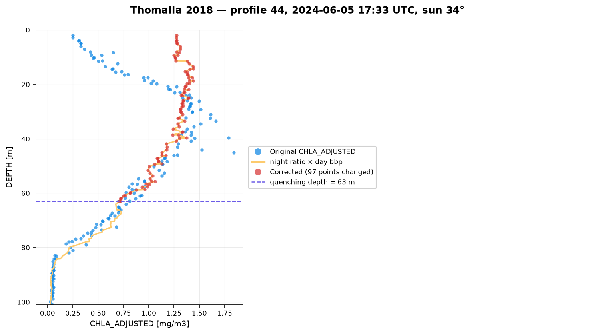
Original daytime CHLA_ADJUSTED, reconstructed chlorophyll and the final corrected profile above the estimated quenching depth.#
5.10 Planned Mitchell et al. (2024) extension#
Principle#
Mitchell et al. (2024) extends the Thomalla et al. (2018) method to better accommodate autonomous platforms operating in spatially heterogeneous environments, such as continental shelf seas. Rather than assuming that the most recent preceding nighttime fluorescence-to-backscatter profile remains representative throughout the following day, the method constructs a time-interpolated nighttime reference from consecutive nights.
All other aspects of the correction, including the determination of the quenching depth and reconstruction of the daytime chlorophyll profile, follow the Thomalla et al. (2018) implementation.
Time-interpolated nighttime reference#
Depth-resolved nighttime fluorescence and fluorescence-to-backscatter reference profiles are first constructed following the Thomalla et al. (2018) workflow.
For a daytime profile acquired at time \(t\), bounded by nighttime reference profiles centred on times \(t_n\) and \(t_{n+1}\), the interpolation weight is
The interpolated fluorescence-to-backscatter ratio is then
where \(R_n(z)\) and \(R_{n+1}(z)\) are the depth-resolved nighttime fluorescence-to-backscatter ratios from the preceding and following nights, respectively.
Mitchell et al. (2024) describes two approaches for constructing the nighttime reference profiles before interpolation:
Mean interpolation (MZ) — interpolate between the mean nighttime reference profiles of consecutive nights.
First–Last interpolation (FLZ) — interpolate between the last nighttime profile of one night and the first nighttime profile of the following night.
Quenching depth#
The interpolated nighttime reference is compared with the daytime CHLA_ADJUSTED profile using the Thomalla et al. (2018) quenching-depth algorithm.
Mitchell et al. (2024) also describes several options for defining the vertical extent of the correction:
correction limited to the euphotic depth (\(Z_{\mathrm{eu}}\));
correction limited to a fixed depth of 65 m; and
no explicit depth limit.
Reconstruction#
Following construction of the interpolated nighttime reference, daytime chlorophyll is reconstructed using the Thomalla et al. (2018) correction. The only modification is that the fluorescence-to-backscatter ratio varies continuously through time according to the interpolated nighttime reference.
The reconstructed value is
and the corrected value is
Assumptions#
The fluorescence-to-backscatter relationship evolves smoothly between consecutive nights.
Linear interpolation between consecutive nighttime reference profiles adequately represents temporal changes in phytoplankton physiology and optical properties.
Consecutive nighttime reference profiles provide sufficient temporal coverage to construct a representative interpolated reference.
The assumptions of the Thomalla et al. (2018) method remain valid.
Figures#

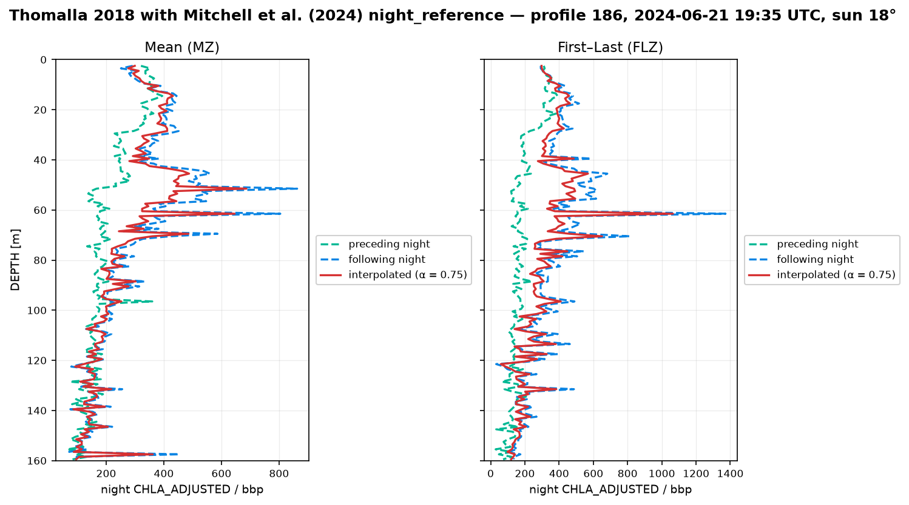
Construction of an interpolated nighttime fluorescence-to-backscatter reference from consecutive nights using the Mean (MZ) and First–Last (FLZ) interpolation approaches.#

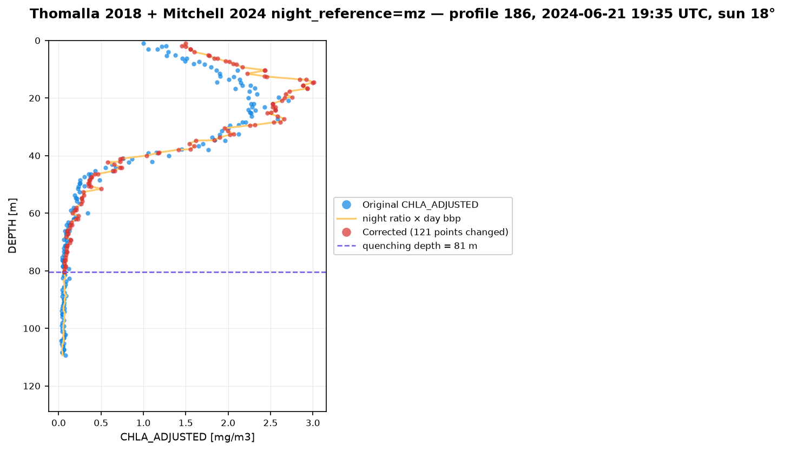
Original daytime CHLA_ADJUSTED together with the interpolated nighttime fluorescence-to-backscatter reference and the final corrected chlorophyll profile.#
5.11 Xing et al. (2018): S08+ correction#
Principle#
The NPQ layer is bounded by the shallower of the mixed-layer depth and the depth of the selected irradiance isolume:
Within this layer, the maximum acceptable fluorescence-to-backscatter ratio is used as the unquenched reference.
Ratio reference#
Correction#
With hybrid: false, this S08+ formulation is applied to all daytime profiles.
Assumptions#
The maximum fluorescence-to-backscatter ratio within the NPQ layer approximates the unquenched ratio.
The shallower of the mixed-layer depth and the selected irradiance isolume provides an appropriate estimate of the vertical extent of NPQ.
Reliable estimates of both mixed-layer depth and irradiance isolume depth are available for each daytime profile.
Figure#

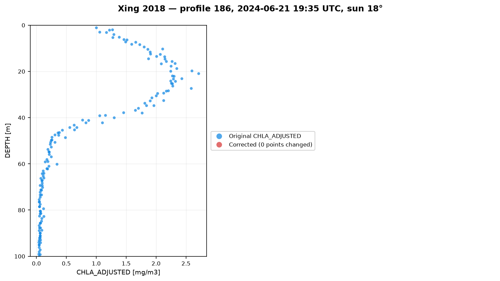
Original and corrected CHLA_ADJUSTED with MLD, \(Z_{\mathrm{IPAR}}\), the resulting NPQ-layer depth and \(R_{\max}\) identified.#
5.12 Terrats et al. (2020) X18_S08 extension#
Principle#
Terrats et al. (2020) modified the Xing et al. (2018) method to improve performance under shallow-mixing conditions. In the original Xing et al. (2018) algorithm, shallow-mixing profiles are corrected using an irradiance-dependent sigmoid function throughout the mixed layer. Terrats et al. (2020) retained this sigmoid correction below the mixed-layer depth (MLD), but replaced the correction above the MLD with a Sackmann et al. (2008)-style fluorescence-to-backscatter reconstruction.
The resulting method, referred to as X18_S08, therefore combines the Xing et al. (2018) sigmoid correction beneath the mixed layer with the Sackmann et al. (2008) assumption of a vertically uniform fluorescence-to-backscatter ratio within the mixed layer.
Mixing regime#
The modification is applied only to shallow-mixing profiles. Following Xing et al. (2018), pelagos-py classifies a profile as shallow mixing when
indicating that the selected irradiance isolume extends beneath the mixed layer.
Profiles satisfying
are classified as deep mixing and are corrected using the standard Xing et al. (2018) S08+ method.
Sigmoid correction below the mixed layer#
Below the mixed-layer depth, the retained fluorescence fraction is
where the implemented parameter values are
Prior to evaluation,
and the retained fluorescence fraction is constrained to
The de-quenched chlorophyll signal below the mixed layer is then
Mixed-layer reconstruction#
Rather than continuing the sigmoid correction into the mixed layer, Terrats et al. (2020) assumes that the unquenched fluorescence-to-backscatter ratio is vertically uniform within the mixed layer.
pelagos-py therefore searches downward from the MLD for the shallowest acceptable observation immediately beneath the mixed layer. At this depth,
The chlorophyll signal above the mixed layer is reconstructed as
As with the other ratio-based methods implemented in pelagos-py, the correction is constrained to be non-decreasing:
and
Irradiance requirements#
The shallow-mixing correction requires a usable irradiance profile throughout the water column. pelagos-py therefore requires at least four finite positive irradiance observations on every daytime profile. If one or more daytime profiles do not satisfy this requirement, the X18_S08 extension is disabled and the standard Xing et al. (2018) correction is applied instead.
Assumptions#
The water column can be classified into deep- and shallow-mixing regimes using the relative depths of the mixed layer and the selected irradiance isolume.
The irradiance profile adequately characterises the vertical light field below the mixed layer.
The Xing et al. (2018) sigmoid correction provides a reasonable estimate of fluorescence quenching beneath the mixed layer.
The unquenched fluorescence-to-backscatter ratio is approximately uniform within the mixed layer.
The fluorescence-to-backscatter ratio immediately beneath the mixed-layer depth is representative of the unquenched mixed-layer ratio.
Figures#

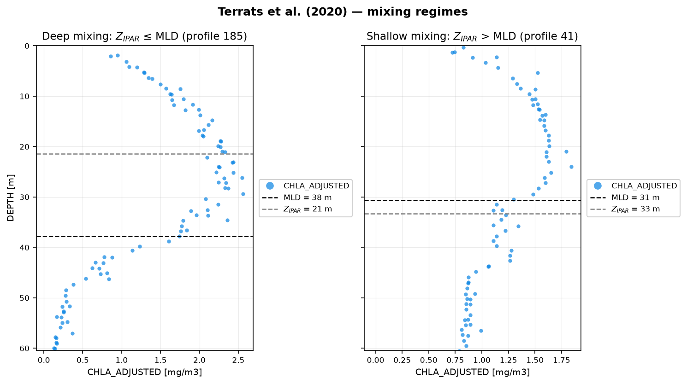
Examples of profiles classified as deep- and shallow-mixing according to the relative depths of the mixed layer and the selected irradiance isolume.#

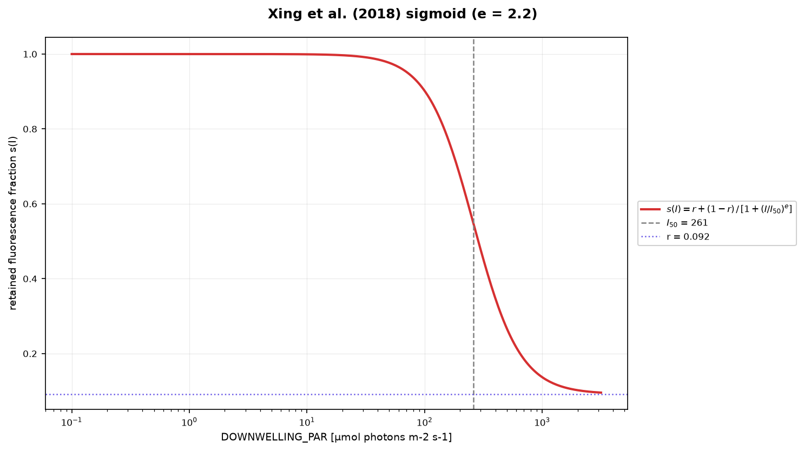
Retained fluorescence fraction, \(s(I)\), as a function of irradiance using the Xing et al. (2018) parameterisation.#

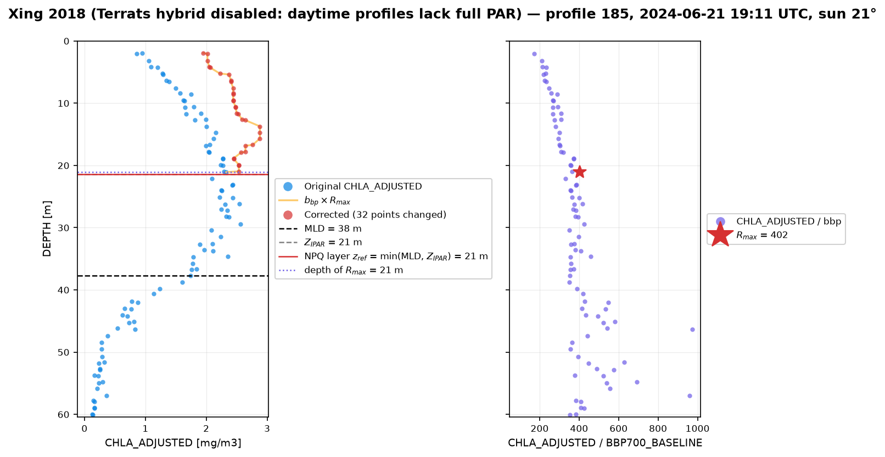
Example shallow-mixing profile showing the Xing et al. (2018) sigmoid correction below the mixed layer, the Sackmann-style fluorescence-to-backscatter reconstruction above the mixed layer, and the final corrected chlorophyll profile. The demo deployment logs PAR on upcasts only, so the hybrid is disabled there and this example shows the plain Xing et al. (2018) correction.#
5.13 Choosing a method#
Method selection should be guided by both the available supporting observations and the assumptions that are most appropriate for the deployment. All methods operate on CHLA_ADJUSTED, produced by the preceding spike and dark corrections. Simpler methods require fewer derived variables but generally assume a vertically homogeneous unquenched fluorescence field. More sophisticated methods exploit particulate backscattering, irradiance profiles and repeated day-night sampling to construct increasingly realistic estimates of the unquenched chlorophyll signal.
Available information |
Candidate method |
When to use |
|---|---|---|
|
Xing et al. (2012) |
When only chlorophyll and mixed-layer depth are available. |
|
Biermann et al. (2015) |
When the euphotic depth is considered a better estimate of the vertical extent of NPQ than the mixed-layer depth. |
|
Sackmann et al. (2008) |
When particulate backscattering is available and the mixed layer is expected to have a nearly uniform fluorescence-to-backscatter ratio. |
|
Swart et al. (2015) |
When the fluorescence-to-backscatter ratio is assumed to remain approximately uniform throughout the euphotic zone rather than only within the mixed layer. |
Repeated day-night |
Hemsley et al. (2015) |
When a single nighttime fluorescence-to-backscatter relationship is expected to remain representative throughout the deployment. |
Repeated day-night |
Thomalla et al. (2018) |
When repeated day-night sampling of the same water mass allows construction of depth-resolved nighttime fluorescence-to-backscatter reference profiles. |
Repeated day-night |
Mitchell et al. (2024) |
When consecutive nighttime reference profiles are available and the fluorescence-to-backscatter relationship is expected to evolve through time, for example during shelf-sea or frontal deployments. |
|
Xing et al. (2018) |
When mixed-layer depth and irradiance-isolume depth are available, allowing the NPQ layer to be estimated for each profile. |
|
Terrats et al. (2020) X18_S08 |
When Xing et al. (2018) is applicable but shallow-mixing conditions are expected, allowing the mixed layer to be reconstructed using a Sackmann-style fluorescence-to-backscatter ratio while retaining the Xing sigmoid correction beneath the mixed layer. |
No single method is universally optimal. Simpler methods require fewer supporting observations but make stronger assumptions about the vertical structure of the unquenched fluorescence field. Methods based on particulate backscattering generally provide more physically realistic reconstructions but require additional optical measurements, while the Hemsley, Thomalla and Mitchell approaches additionally rely on repeated day-night sampling. Regardless of the selected method, diagnostic plots should always be inspected to confirm that the correction reference, quenching depth and resulting chlorophyll profile are physically realistic.
6. NPQ diagnostics#
When diagnostics are enabled, pelagos-py compares the available NPQ correction methods and displays the correction produced by the configured method.
The method-comparison diagnostics pair daytime profiles with nearby nighttime profiles, bin the observations by depth and score the agreement in the upper 50 m, where the effects of NPQ and differences between correction methods are expected to be greatest.
The comparison is performed using CHLA_ADJUSTED. For daytime profiles, this represents either the pre-NPQ value or the value produced by each candidate NPQ correction method. Nighttime CHLA_ADJUSTED observations are unchanged by the NPQ correction and provide the corresponding nighttime reference.
For paired corrected daytime values \(F_{d,i}^{\mathrm{corr}}\) and nighttime values \(F_{n,i}\), the bias is
and the root-mean-square error is
A linear regression is also fitted and its coefficient of determination reported:
These diagnostics assess the consistency between daytime CHLA_ADJUSTED profiles and nearby nighttime CHLA_ADJUSTED profiles. They provide a comparative measure of how effectively the different NPQ methods reproduce the nighttime chlorophyll structure but do not establish that nighttime fluorescence-derived chlorophyll is an unbiased estimate of true chlorophyll concentration.

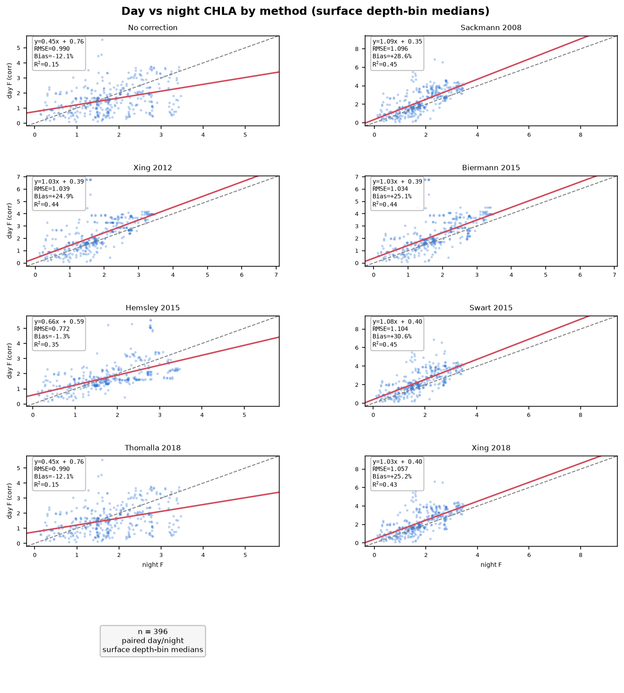
Daytime-versus-nighttime comparison for the pre-NPQ CHLA_ADJUSTED baseline and each runnable NPQ correction method, including 1:1 lines, regression fits, RMSE, bias and \(R^2\).#

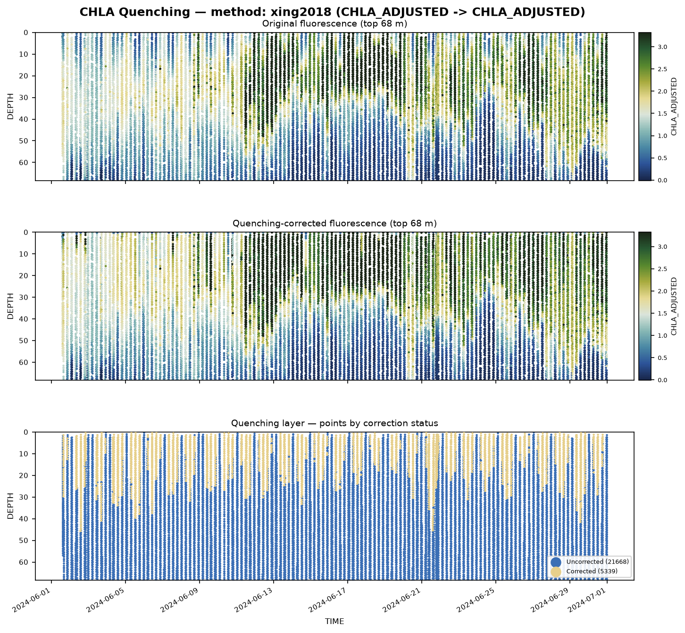
Pre-NPQ and NPQ-corrected CHLA_ADJUSTED depth-time sections, with a third panel identifying observations whose values were modified by the configured NPQ correction.#

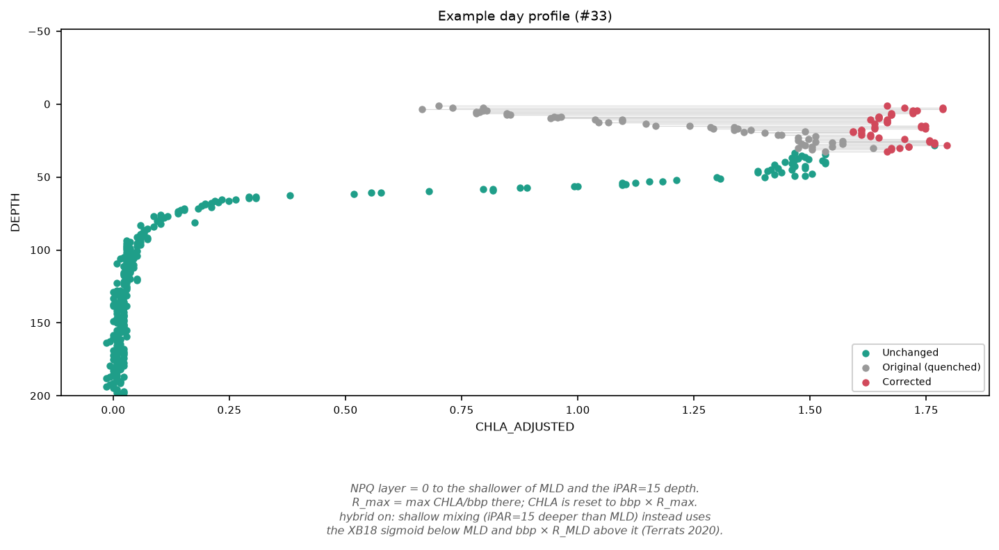
Example daytime CHLA_ADJUSTED profile for the configured method showing unchanged observations, original quenched values and NPQ-corrected values.#
7. Final quality control#
Following dark-offset and NPQ correction, pelagos-py applies the generic Range QC algorithm a second time using chlorophyll-specific thresholds. This final screening step verifies that the corrected chlorophyll-a concentrations remain physically plausible and highlights observations or profiles that should be inspected before scientific interpretation.
7.1 Default configuration#
Following deep-offset and NPQ correction, pelagos-py applies a second Range QC test to the corrected chlorophyll-a concentration (CHLA_ADJUSTED). Unlike the initial range test, which identifies only grossly implausible observations in the manufacturer-calibrated CHLA, this final test provides a broader quality classification of the fully corrected product.
The default configuration is
variable_ranges:
CHLA_ADJUSTED:
4: [-0.2, 100, outside]
2: [-0.2, 100, inside]
reset_flags: [3, 5]
reset_flags lets this test replace the interim 3 inherited from CHLA and the 5 set by CHLA Quenching on the values it corrected; 4 and 9 are kept. The resulting classification is
Corrected chlorophyll-a concentration (mg m-3) |
QC flag |
|---|---|
< -0.2 |
4 (bad) |
-0.2–100 |
2 (probably good) |
> 100 |
4 (bad) |
These thresholds are intended as conservative defaults suitable for a wide range of marine environments. Rather than defining universal limits on naturally occurring chlorophyll concentrations, they provide a simple quality classification of the corrected product. Users working in highly productive coastal waters, estuaries or harmful algal bloom conditions may wish to increase the upper thresholds to better reflect the expected concentration range for their deployment.
The mathematical formulation of the Range QC algorithm, including the treatment of overlapping intervals, QC flag merging and propagation rules, is described in the Quality Control documentation.
7.2 Why repeat the range test?#
Both the dark-offset and NPQ corrections modify CHLA_ADJUSTED. Although these corrections are designed to improve the estimate of the underlying chlorophyll-a concentration, unrealistic corrected values can occasionally arise if a correction reference is poorly constrained, for example because of anomalously small backscatter values, an inappropriate dark estimate or an unsuitable NPQ reference.
The final range test therefore provides an independent quality-control step on the fully corrected product, ensuring that unrealistic values are identified before the dataset is distributed or used for scientific analysis.
Best practice
The final range test should not be used in isolation. Profiles receiving bad (
4) flags should be inspected alongside the deep-correction and NPQ diagnostic plots to determine whether the correction parameters remain appropriate for the deployment.
Diagnostics#
Placeholder: Histogram of CHLA_ADJUSTED showing the configured final range limits.
Placeholder: Depth-time section of CHLA_ADJUSTED coloured by the final QC flags.
Placeholder: Scatter plot comparing the initial manufacturer-calibrated CHLA with the final CHLA_ADJUSTED, highlighting observations whose QC classification changed during processing.
8. Outputs#
The chlorophyll processing workflow produces or updates the following variables:
Variable |
Description |
|---|---|
|
Raw fluorometer signal in counts. This is the native fluorescence measurement used as the input to spike correction. |
|
Chlorophyll-a concentration derived from |
|
Quality-control flags associated with |
Fluorescence baseline variable |
Despiked baseline fluorescence signal, in counts, produced by the Spike QC algorithm. This variable provides the input to the subsequent dark correction. |
Fluorescence spike variable |
Fluorescence component separated from the baseline by the Spike QC algorithm. This variable is retained independently and does not contribute to subsequent chlorophyll correction calculations. |
|
Despiked and dark-corrected fluorescence signal in RFU. This variable is retained as the adjusted fluorescence product and does not undergo NPQ correction. |
|
Chlorophyll-a concentration (mg m-3) derived using the in-situ dark correction and manufacturer scale factor, and subsequently corrected for NPQ where applicable. This represents the primary corrected chlorophyll-a product. |
|
Quality-control flags associated with |
The chlorophyll workflow requires supporting variables such as mixed-layer depth (MLD), euphotic depth (ZEU), irradiance isolume depth (Z_IPAR) and particulate backscattering (BBP) for selected NPQ methods. These variables are expected to have been generated by preceding processing steps and are not created or modified by the chlorophyll processing workflow.
The workflow also calculates profile-specific dark estimates (iDARK_CHLA) throughout the deployment and an initial deployment-specific dark value (GLIDER_DARK_CHLA). These values are retained as processing diagnostics and metadata, allowing the stability of the fluorometer baseline and potential sensor drift or biofouling to be assessed.
Where applicable, CHLA_ADJUSTED and CHLA_FLUORESCENCE_ADJUSTED retain relevant metadata associated with the input fluorescence measurement and record the processing history and applied correction parameters within their attributes.
9. Recommended reporting#
A scientific methods section describing chlorophyll processing with pelagos-py should report:
the manufacturer calibration coefficients used to convert
CHLA_FLUORESCENCE_RAWtoCHLAfor the initial global range test;the initial and final chlorophyll range-test thresholds;
the spike-correction window size and sensitivity, and that spike separation was performed on
CHLA_FLUORESCENCE_RAW;the profile-selection criteria used for the deep-offset correction;
the number of profiles used to estimate the deployment-specific dark value (
GLIDER_DARK_CHLA);the near-surface depth interval excluded from NPQ reference calculations;
the selected NPQ correction method and any required supporting variables;
whether the Terrats et al. (2020) hybrid extension was enabled;
the QC flags excluded from NPQ reference calculations; and
the diagnostic plots used to assess the quality of the correction.
An example methods description is given below.
Chlorophyll-a fluorescence measurements were processed using Pelagos. The raw fluorometer signal (
CHLA_FLUORESCENCE_RAW, counts) was first converted to chlorophyll-a concentration (CHLA) using the manufacturer-supplied dark and scale coefficients. A conservative global range test was applied to this factory-calibrated product, with observations outside -0.2 to 100 mg m-3 flagged as bad. The resultingCHLAvalues were used only for this initial quality-control test and did not contribute numerically to subsequent correction calculations.Spike separation was subsequently performed directly on
CHLA_FLUORESCENCE_RAWusing a centred rolling-median window of 50 observations and a sensitivity of 2. The resulting despiked fluorescence baseline was used for the dark correction, while the separated spike component was retained independently. A profile-specific in-situ dark estimate (iDARK_CHLA) was calculated from the minimum valid fluorescence baseline for each qualifying profile. A deployment-specific dark value (GLIDER_DARK_CHLA) was established from the first five qualifying profiles and used in place of the manufacturer-supplied dark coefficient. The manufacturer scale factor was retained to generate the dark-corrected chlorophyll concentration (CHLA_ADJUSTED, mg m-3), while the corresponding despiked and dark-corrected fluorescence signal was retained separately asCHLA_FLUORESCENCE_ADJUSTED(RFU). Profile-specific dark estimates continued to be calculated throughout the deployment as a diagnostic of sensor-baseline stability, drift and potential biofouling.Observations within the upper 5 m were excluded from NPQ reference calculations while remaining eligible for correction. Daytime non-photochemical quenching was corrected using the Thomalla et al. (2018) method applied to
CHLA_ADJUSTED, in which each daytime profile was reconstructed above the estimated quenching depth using the depth-resolved nighttime fluorescence-to-backscatter ratio. Particulate backscattering (BBP700) was used as the optical reference, while observations carrying QC flags 3, 4 and 9 were excluded from calculation of the correction reference.CHLA_FLUORESCENCE_ADJUSTEDwas not modified by the NPQ correction. The Terrats et al. (2020) hybrid extension was not applied.Following NPQ correction,
CHLA_ADJUSTEDwas subjected to a final range quality-control test to classify the fully corrected chlorophyll product. Diagnostic plots of the spike separation, deep-offset correction, deployment-wideiDARK_CHLAtime series, NPQ correction and final quality-controlled chlorophyll profiles were inspected to verify the suitability of the selected processing parameters.
References#
Biermann, L., Guinet, C., Bester, M. N., Brierley, A. S., & Boehme, L. (2015). An optimised method for correcting quenched fluorescence yield. Ocean Science, 11, 83–91. https://doi.org/10.5194/os-11-83-2015
Hemsley, V. S., Smyth, T. J., Martin, A. P., Frajka-Williams, E., Thompson, A. F., Damerell, G., & Painter, S. C. (2015). Estimating oceanic primary production using vertical irradiance and chlorophyll profiles from ocean gliders in the North Atlantic. Environmental Science & Technology, 49(19), 11612–11621. https://doi.org/10.1021/acs.est.5b00608
Mitchell, C., Drapeau, D., Pinkham, S., & Balch, W. M. (2024). A chlorophyll a non-photochemical fluorescence quenching correction method for autonomous underwater vehicles in shelf sea environments. Limnology and Oceanography: Methods, 22(3), 149–158. https://doi.org/10.1002/lom3.10597
Sackmann, B. S., Perry, M. J., & Eriksen, C. C. (2008). Seaglider observations of variability in daytime fluorescence quenching of chlorophyll-a in Northeastern Pacific coastal waters. Biogeosciences Discussions, 5, 2839–2865. https://doi.org/10.5194/bgd-5-2839-2008
Schmechtig, C., Claustre, H., Poteau, A., D’Ortenzio, F., Schallenberg, C., Trull, T., Xing, X., & Sauzède, R. (2026). BGC-Argo quality control manual for the Chlorophyll-A concentration. Ifremer. https://doi.org/10.13155/35385
Swart, S., Thomalla, S. J., & Monteiro, P. M. S. (2015). The seasonal cycle of mixed layer dynamics and phytoplankton biomass in the Sub-Antarctic Zone: A high-resolution glider experiment. Journal of Marine Systems, 147, 103–115. https://doi.org/10.1016/j.jmarsys.2014.06.002
Terrats, L., Claustre, H., Cornec, M., Mangin, A., & Neukermans, G. (2020). Detection of coccolithophore blooms with BioGeoChemical-Argo floats. Geophysical Research Letters, 47, e2020GL090559. (The X18_S08 NPQ correction is described in Supplementary Information, Text S2: Correction of the Non-Photochemical Quenching (NPQ).). https://doi.org/10.1029/2020GL090559
Thomalla, S. J., Moutier, W., Ryan-Keogh, T. J., Gregor, L., & Schütt, J. (2018). An optimized method for correcting fluorescence quenching using optical backscattering on autonomous platforms. Limnology and Oceanography: Methods, 16(3), 132–144. https://doi.org/10.1002/lom3.10234
Xing, X., Claustre, H., Blain, S., D’Ortenzio, F., Antoine, D., Ras, J., & Guinet, C. (2012). Quenching correction for in vivo chlorophyll fluorescence acquired by autonomous platforms: A case study with instrumented elephant seals in the Kerguelen region (Southern Ocean). Limnology and Oceanography: Methods, 10, 483–495. https://doi.org/10.4319/lom.2012.10.483
Xing, X., Claustre, H., Blain, S., D’Ortenzio, F., Antoine, D., Ras, J., & Guinet, C. (2018). Correction of profiles of in situ chlorophyll fluorescence for the contribution of fluorescence quenching. Optics Express, 26(19), 24734–24751. https://doi.org/10.1364/OE.26.024734